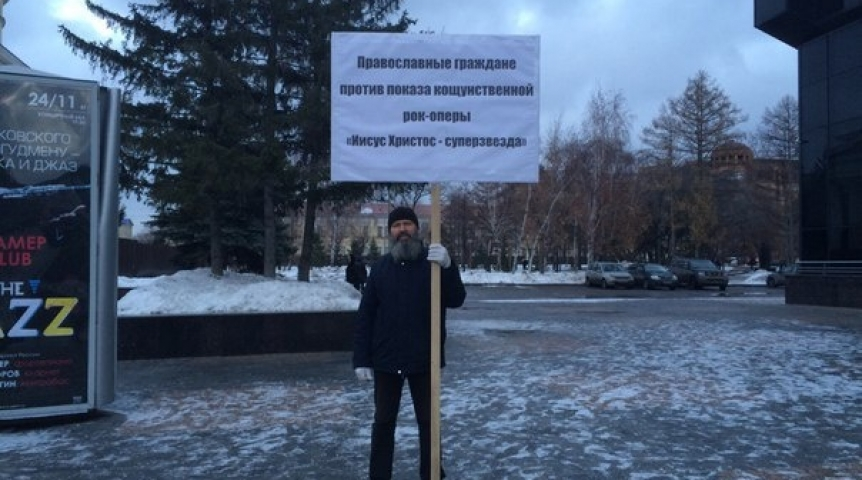

О «запрете» рок-оперы «Иисус Христос – суперзвезда»,
и о чём в реальности говорилось на совместном заседании
Совета по культуре и искусству и Совета по русскому языку

Общественность выступила против показа в Омске рок-оперы «Иисус Христос – суперзвезда»
В Омске прошел одиночный пикет православных христиан против показа рок-оперы